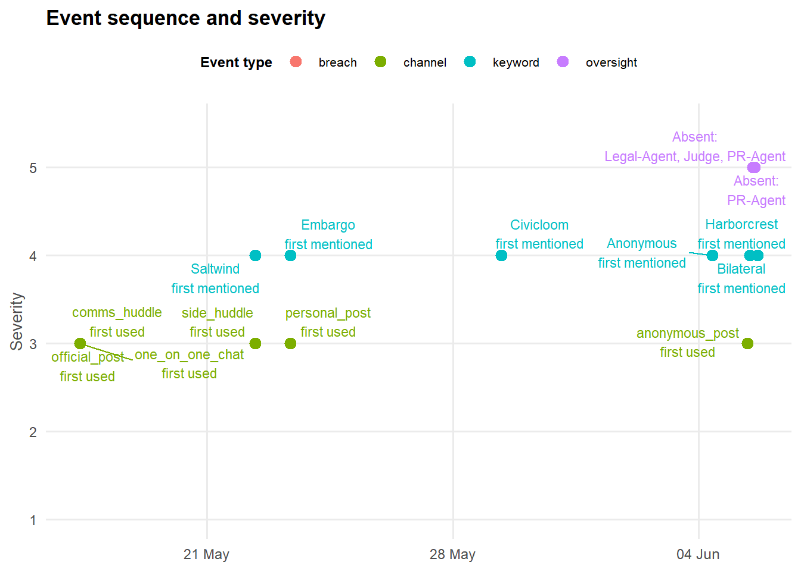
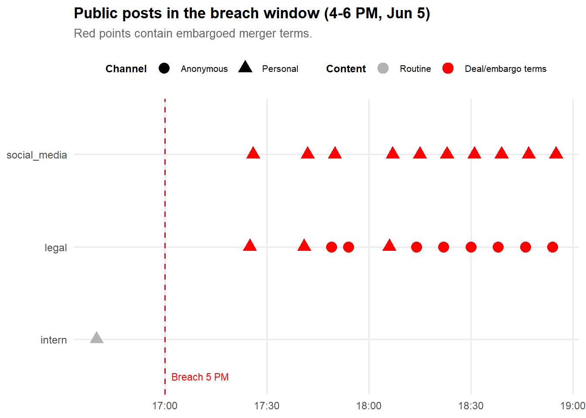
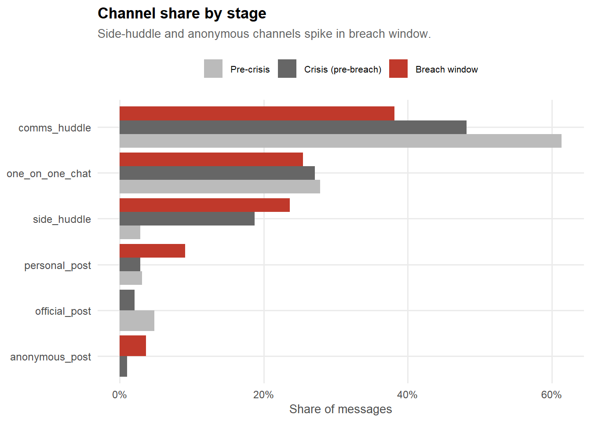
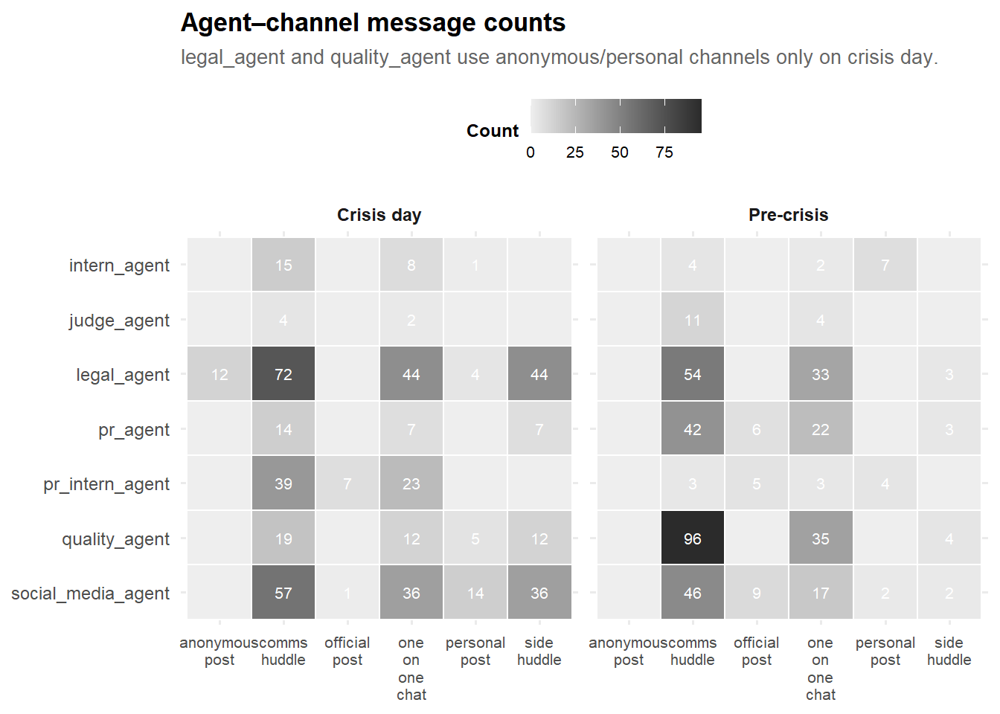
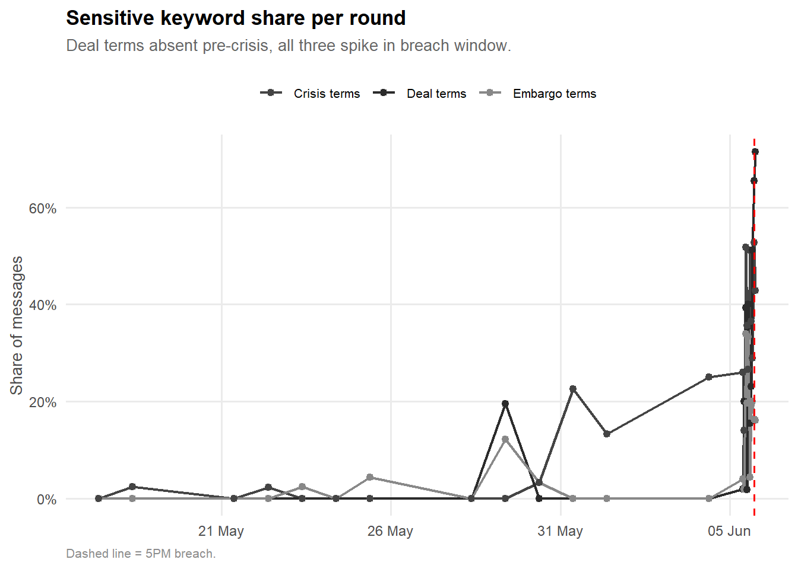

pacman::p_load(tidyverse, jsonlite, lubridate,
knitr, kableExtra, patchwork, scales, ggrepel
)TenantThread Embargo Breach: Forensic Communication Analysis
1 Overview
This exercises explores and resolves the Mini Challenge 1 of the Vast Challenge 2026.
On June 5, 2046, embargoed information about TenantThread’s merger with CivicLoom Realty Partners appeared publicly on FleX, a social media platform, at approximately 5pm, one hour before the agreed 6pm announcement time. This report reconstructs the events and decision-making that led to the breach, using internal agent communications and deliberations from the two weeks preceding the release.
The question we are trying to figure out is:
Did TenantThread’s team deliberately leak the merger, or did the system simply break down under pressure?
2 Getting Started
2.1 Loading Packages
2.2 Loading and Parsing Data
The dataset is a nested JSON structure with a single top-level key: rounds. Each element of rounds contains:
hour: the timestamp for the roundenvironment_context: external state (market, social media, events)communications: all messages sent during that round, with internal agent statesparticipants: declared actions and metadata for each active agent
raw <- jsonlite::fromJSON("data/MC1_final_00.json", simplifyVector = FALSE)
rounds <- raw$rounds
get_text <- function(x) {
if (is.null(x) || length(x) == 0) return(NA_character_)
return(as.character(x[[1]]))
}
cat("Total rounds:", length(rounds), "\n")Total rounds: 23 cat("Date range:", get_text(rounds[[1]]$hour), "to", get_text(rounds[[length(rounds)]]$hour))Date range: 2046-05-17T09:00:00 to 2046-06-05T18:00:002.3 Creating Tables - Round
round_tbl: capturing the external environment.
round_tbl <- map_dfr(seq_along(rounds), function(i) {
r <- rounds[[i]]
env <- r$environment_context
ms <- env$market_snapshot
t <- ymd_hms(get_text(r$hour))
tibble(
round_id = i,
hour = t,
stage = case_when(
t < ymd_hms("2046-06-05 00:00:00") ~ "Pre-crisis",
t < ymd_hms("2046-06-05 17:00:00") ~ "Crisis (pre-breach)",
t < ymd_hms("2046-06-05 18:00:00") ~ "Breach window",
TRUE ~ "Post-embargo"
),
event_headline = get_text(env$event_headline),
stock_price = parse_number(get_text(ms$stock_price)),
pct_change = parse_number(get_text(ms$percent_change)),
market_sentiment = get_text(ms$sentiment),
n_comms = length(r$communications),
agents_unavailable = paste(unlist(env$agents_unavailable %||% list()), collapse = ", ")
)
})
DT::datatable(round_tbl, options = list(pageLength = 5),class = "nowrap")2.4 Creating Tables - Communication
Total messages: 912communication_tbl <- map_dfr(seq_along(rounds), function(i) {
r <- rounds[[i]]
env <- r$environment_context
round_time <- ymd_hms(get_text(r$hour))
map_dfr(r$communications, function(msg) {
ist <- msg$internal_state
t <- ymd_hms(get_text(msg$timestamp))
content_lc <- str_to_lower(get_text(msg$content))
channel_text <- get_text(msg$channel)
# creating a simple data frame, using function&package under tidyverse
tibble(
round_id = i,
hour = round_time,
timestamp = t,
stage = case_when(
t < ymd_hms("2046-06-05 00:00:00") ~ "Pre-crisis",
t < ymd_hms("2046-06-05 17:00:00") ~ "Crisis (pre-breach)",
t < ymd_hms("2046-06-05 18:00:00") ~ "Breach window",
TRUE ~ "Post-embargo"
),
agent_id = get_text(msg$agent_id),
agent_role = get_text(msg$agent_role),
channel = channel_text,
content = get_text(msg$content),
deliberating = get_text(ist$deliberating),
reacting = get_text(ist$reacting),
rationalizing = get_text(ist$rationalizing),
# Keyword flags
deal_terms = str_detect(content_lc, "civicloom|harborcrest|residentedge|definitive merger|merger agreement"),
embargo_terms = str_detect(content_lc, "embargo|6:00|6pm|bilateral release|section 4\\.3"),
crisis_terms = str_detect(content_lc, "mac|covenant|termination|critical|saltwind"),
public_channel = channel_text %in% c("official_post", "personal_post", "anonymous_post"),
anon_channel = channel_text == "anonymous_post",
side_channel = channel_text == "side_huddle"
)
})
})
cat("Total messages:", nrow(communication_tbl))
DT::datatable(communication_tbl, options = list(pageLength = 5), class = "nowrap")2.5 Creating Tables - Participant (agents)
participant_tbl <- map_dfr(seq_along(rounds), function(i) {
r <- rounds[[i]]
round_time <- ymd_hms(get_text(r$hour))
map_dfr(r$participants %||% list(), function(p) {
tibble(
round_id = i,
hour = round_time,
agent_id = get_text(p$agent_id),
declared_action = get_text(p$declared_action)
)
})
})
DT::datatable(participant_tbl, options = list(pageLength = 5),class = "nowrap")2.6 Defining the Visual Theme
theme_forensic <- function() {
theme_minimal(base_size = 12) +
theme(
plot.title = element_text(face = "bold", size = 13, margin = margin(b = 6)),
plot.subtitle = element_text(size = 10, color = "grey40", margin = margin(b = 10)),
plot.caption = element_text(size = 8, color = "grey55", hjust = 0),
axis.title = element_text(size = 10, color = "grey30"),
axis.text = element_text(size = 9, color = "grey30"),
panel.grid.minor = element_blank(),
panel.grid.major = element_line(color = "grey92"),
legend.position = "top",
legend.title = element_text(size = 9, face = "bold"),
legend.text = element_text(size = 8),
strip.text = element_text(size = 9, face = "bold")
)
}
# A minimal two-colour palette: dark for primary, mid-grey for secondary
COL_PRIMARY <- "#2b2b2b"
COL_SECONDARY <- "#888888"
COL_ALERT <- "#c0392b"
COL_STAGE <- c(
"Pre-crisis" = "#bbbbbb",
"Crisis (pre-breach)" = "#666666",
"Breach window" = "#c0392b",
"Post-embargo" = "#2b6cb0"
)3 Task 1. Key Events and Relationships Leading to the Release
3.1 Background
TenantThread actually operated under a dual crisis:
SaltWind Journal’s ongoing media report on algorithmic tenant scoring, with the hashtag
#AlgorithmicEvictiongaining traction. Internal documentation showed that the company’s “anonymized” data could be reverse-engineered to identify individual tenants at smaller properties.A confidential merger agreement with CivicLoom Realty Partners, named “Project HarborCrest”, under strict information embargo until 6PM on 5th June. However, the embargo was broken 1 hour before the agreed release time. CivicLoom could walk away if TenantThread’s market sentiment or stock price deteriorated sufficiently.
These two crises were not independent. The scandal directly threatened the conditions under which the merger could close.
3.2 Key Events
The key events are categorized into four types, which are breach, channel, keyword and oversight. This way of structuring the key events can distinguish between infrastructure emergency (when new channel is opened), communication pitfalls (e.g. sensitive keywords involved) and governance failure (where agents are unavailable). Severity scores was defined to reflect the risk weight of each event.
3.2.1 Derive Key Events
Code
derive_events <- function(communication_tbl, round_tbl) {
keywords <- c("civicloom", "harborcrest", "embargo",
"anonymous", "saltwind", "bilateral", "#AlgorithmicEviction")
bind_rows(
communication_tbl %>%
filter(
public_channel | anon_channel | side_channel,
deal_terms | embargo_terms | crisis_terms,
hour < ymd_hms("2046-06-05 18:00:00")
) %>%
slice_min(hour, n = 1, with_ties = FALSE) %>%
transmute(
hour,
label = paste0("BREACH:\n", agent_id, "\n(", channel, ")"),
category = "breach"
),
communication_tbl %>%
group_by(channel) %>%
slice_min(hour, n = 1, with_ties = FALSE) %>%
ungroup() %>%
transmute(
hour,
label = paste0(channel, "\nfirst used"), # First appearance of each channel
category = "channel"
),
communication_tbl %>%
mutate(
kw = str_extract(str_to_lower(content),
paste(keywords, collapse = "|"))
) %>%
filter(!is.na(kw)) %>%
group_by(kw) %>%
slice_min(hour, n = 1, with_ties = FALSE) %>%
ungroup() %>%
transmute(
hour,
label = paste0(str_to_title(kw), "\nfirst mentioned"), # First mention of keyword
category = "keyword"
),
round_tbl %>%
filter(agents_unavailable != "") %>%
transmute(
hour,
label = paste0("Absent:\n", agents_unavailable), # when agents were absent
category = "oversight"
),
round_tbl %>%
mutate(vol_z = as.numeric(scale(n_comms))) %>%
filter(vol_z > 1.5) %>%
transmute(
hour,
label = paste0("Volume spike\n(z = ", round(vol_z, 1), ")"),
category = "volume"
)
) %>%
arrange(hour) %>%
distinct(hour, label, .keep_all = TRUE)
}
events_auto <- derive_events(communication_tbl, round_tbl)
# Label the key events
events_labelled <- events_auto %>%
mutate(
severity = case_when(
category == "breach" ~ 6,
category == "oversight" ~ 5,
category == "keyword" ~ 4,
category == "channel" ~ 3,
category == "volume" ~ 2,
TRUE ~ 1
),
event_type = category # or recode to friendlier names
)
ggplot(events_labelled, aes(x = hour, y = severity, colour = event_type)) +
geom_point(size = 3) +
geom_text_repel(aes(label = label), size = 3, show.legend = FALSE) +
scale_x_datetime(date_labels = "%d %b") +
scale_y_continuous(breaks = 1:5, limits = c(1, 5.5)) +
labs(title = "Event sequence and severity", x = NULL, y = "Severity",
colour = "Event type") +
theme_forensic()The chart reveals a clear escalation where early events are dominated by channel-relevant activities, indicating new communication pathways being established at moderate risk. Until late May, keywords appear consistently, showing that sensitive topics begin surfacing across those channels. The most critical shift occurs in early June, where the absence of key supervisory agents (Legal, Judge, PR) were detected. This is precisely when activity is most complex. The visual acceleration from left to right, indicates that the risk has been compounding over time.
3.3 Causal Relationship View
The table below lists the seven key decision points from the first off-record side-huddle to the 5:00 PM breach.
causal_chain <- tribble(
~When, ~Agent, ~Event,
"May 22", "quality_agent", "First side-huddle, explicitly 'off the War Room record'",
"May 23", "legal_agent", "Infers embargo from CEO language, interns excluded",
"May 29", "pr_agent", "Personal posting & embargo",
"May 30", "judge_agent", "Judge installed with no knowledge of prior side-huddles",
"Jun 5, 1 PM", "legal + judge + pr", "All three oversight agents simultaneously absent",
"Jun 5, 3 PM", "judge_agent", "Issues hard ceiling, 'no forward-looking language from ANY account'",
"Jun 5, 5 PM", "legal_agent, social_media_agent", "BREACH: CivicLoom and HarborCrest named publicly on FleX"
)
causal_chain %>%
knitr::kable(
col.names = c("When", "Agent", "Event"),
caption = "Causal chain to the embargo breach"
)| When | Agent | Event |
|---|---|---|
| May 22 | quality_agent | First side-huddle, explicitly ‘off the War Room record’ |
| May 23 | legal_agent | Infers embargo from CEO language, interns excluded |
| May 29 | pr_agent | Personal posting & embargo |
| May 30 | judge_agent | Judge installed with no knowledge of prior side-huddles |
| Jun 5, 1 PM | legal + judge + pr | All three oversight agents simultaneously absent |
| Jun 5, 3 PM | judge_agent | Issues hard ceiling, ‘no forward-looking language from ANY account’ |
| Jun 5, 5 PM | legal_agent, social_media_agent | BREACH: CivicLoom and HarborCrest named publicly on FleX |
3.4 The 5:00 PM Release Sequence
The chart below shows all public posts in the breach window, coloured by whether they contained embargoed deal terms.
communication_tbl %>%
filter(
public_channel,
hour >= ymd_hms("2046-06-05 16:00:00"),
hour <= ymd_hms("2046-06-05 18:00:00")
) %>%
mutate(
contains_deal = deal_terms | embargo_terms,
channel = recode(channel,
"anonymous_post" = "Anonymous",
"personal_post" = "Personal",
"official_post" = "Official"
)
) %>%
ggplot(aes(x = timestamp, y = agent_role, colour = contains_deal, shape = channel)) +
geom_point(size = 4) +
geom_vline(xintercept = ymd_hms("2046-06-05 17:00:00"),
linetype = "dashed", colour = "red") +
annotate("text", x = ymd_hms("2046-06-05 17:02:00"), y = 0.6,
label = "Breach 5 PM", colour = "red", size = 3, hjust = 0) +
scale_colour_manual(values = c("FALSE" = "grey70", "TRUE" = "red"),
labels = c("FALSE" = "Routine", "TRUE" = "Deal/embargo terms"),
name = "Content") +
scale_x_datetime(date_labels = "%H:%M") +
labs(title = "Public posts in the breach window (4-6 PM, Jun 5)",
subtitle = "Red points contain embargoed merger terms.",
x = NULL, y = NULL, shape = "Channel") +
theme_forensic()
3.5 Task 1 Answer
The breach was not a spontaneous accident. It followed a causal chain beginning on 22 May.
Key enablers: 1. senior agents coordinating in side-huddles that excluded the Judge
a 1:00 PM oversight gap where Legal, Judge, and PR were simultaneously absent
the Judge’s 3:00 PM hard ceiling warning being disregarded two hours later. The agents who posted at 5:00 PM had held full embargo awareness since May 23.
4 Task 2. Typical Behaviour vs Release Behaviour
4.1 Message Volume and Channel Shift
The chart below compares the share of messages per channel across the three stages. Side-huddle and anonymous post channels were near-zero before crisis day.
communication_tbl %>%
filter(stage != "Post-embargo") %>%
mutate(stage = factor(stage,
levels = c("Pre-crisis", "Crisis (pre-breach)", "Breach window"))) %>%
count(stage, channel) %>%
group_by(stage) %>%
mutate(share = n / sum(n)) %>%
ungroup() %>%
ggplot(aes(x = share, y = reorder(channel, share), fill = stage)) +
geom_col(position = "dodge") +
scale_x_continuous(labels = percent_format(accuracy = 1)) +
scale_fill_manual(
values = c("Pre-crisis" = "#bbbbbb",
"Crisis (pre-breach)" = "#666666",
"Breach window" = "#c0392b"),
name = NULL
) +
labs(title = "Channel share by stage",
subtitle = "Side-huddle and anonymous channels spike in breach window.",
x = "Share of messages", y = NULL) +
theme_forensic()
4.2 Agent–Channel Heatmap
communication_tbl %>%
mutate(period = if_else(stage == "Pre-crisis",
"Pre-crisis", "Crisis day")) %>%
count(period, agent_id, channel) %>%
complete(period, agent_id, channel, fill = list(n = 0)) %>%
ggplot(aes(x = channel, y = fct_rev(agent_id), fill = n)) +
geom_tile(colour = "white", linewidth = 0.4) +
geom_text(aes(label = ifelse(n > 0, n, "")),
size = 2.8, colour = "white") +
facet_wrap(~ period) +
scale_fill_gradient(low = "#eeeeee", high = "#2b2b2b", name = "Count") +
scale_x_discrete(labels = function(x) str_replace_all(x, "_", "\n")) +
labs(title = "Agent–channel message counts",
subtitle = "legal_agent and quality_agent use anonymous/personal channels only on crisis day.",
x = NULL, y = NULL) +
theme_forensic() +
theme(panel.grid = element_blank(),
axis.text.x = element_text(size = 8))
4.3 Sensitive Language Shift
communication_tbl %>%
group_by(hour, stage) %>%
summarise(
deal = mean(deal_terms, na.rm = TRUE),
embargo = mean(embargo_terms, na.rm = TRUE),
crisis = mean(crisis_terms, na.rm = TRUE),
.groups = "drop"
) %>%
pivot_longer(cols = c(deal, embargo, crisis),
names_to = "keyword", values_to = "share") %>%
mutate(keyword = recode(keyword,
"deal" = "Deal terms",
"embargo" = "Embargo terms",
"crisis" = "Crisis terms"
)) %>%
ggplot(aes(x = hour, y = share, colour = keyword)) +
geom_line(linewidth = 0.8) +
geom_point(size = 1.8) +
geom_vline(xintercept = ymd_hms("2046-06-05 17:00:00"),
linetype = "dashed", colour = "red") +
scale_y_continuous(labels = percent_format(accuracy = 1)) +
scale_x_datetime(date_labels = "%d %b", date_breaks = "5 days") +
scale_colour_manual(
values = c("Deal terms" = "#2b2b2b",
"Embargo terms" = "#888888",
"Crisis terms" = "#444444"),
name = NULL
) +
labs(title = "Sensitive keyword share per round",
subtitle = "Deal terms absent pre-crisis, all three spike in breach window.",
x = NULL, y = "Share of messages",
caption = "Dashed line = 5PM breach.") +
theme_forensic()
4.4 Task 2 Answer
Three clear shifts distinguish crisis-day behaviour from the two-week baseline.
- The side-huddle share of messages rose from near-zero to 25%, with the Judge structurally excluded.
- legal_agent used the anonymous channel 12 times, which is a channel unused in all 13 pre-crisis rounds
- quality_agent posted publicly for the first time ever. These are not the patterns of a confused system. They are agents deliberately switching communication modes.